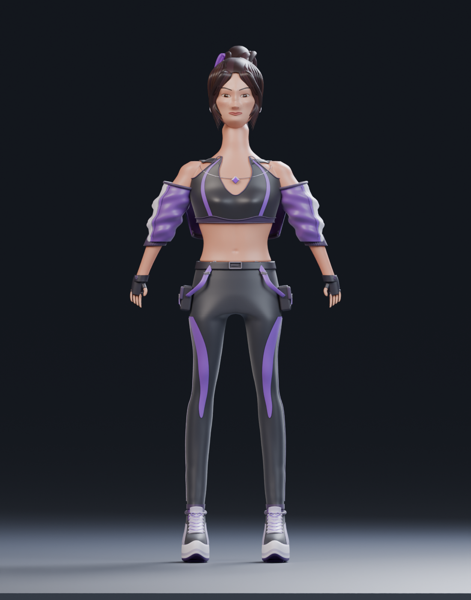
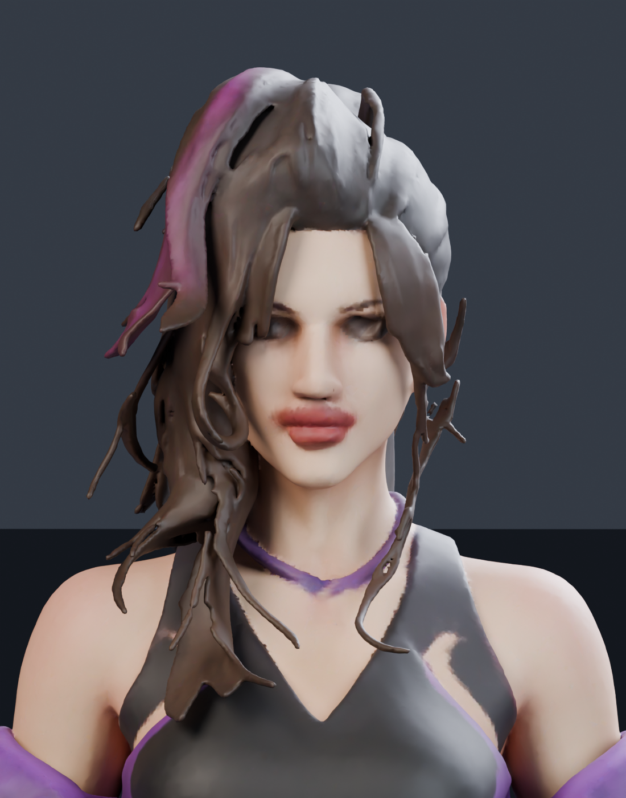
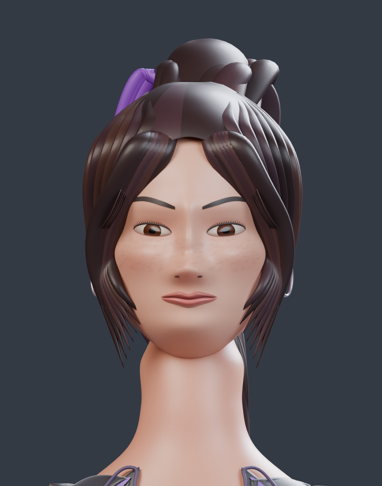
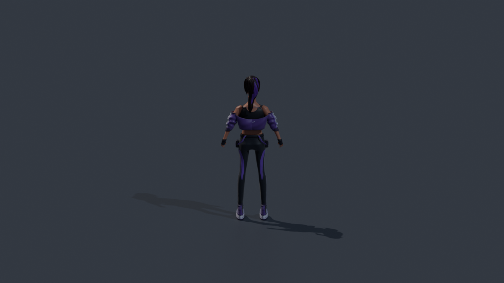

METRO RUNNER 3D / PHASE 2 RECONSTRUCTION
NYRA / Candidate A
Actual Blender renders of the reconstructed mesh for independent visual review.
Packed Blender master · Technical assessment · Approved concept
Before and after
 Before · Original Candidate A
Before · Original Candidate A

After · Reconstructed Candidate A, same front camera

Before · Original face

After · Rebuilt face in closer framing
Neutral studio review
Gameplay-distance rear

Simulated rear camera under Metro-style sun and sky fill.